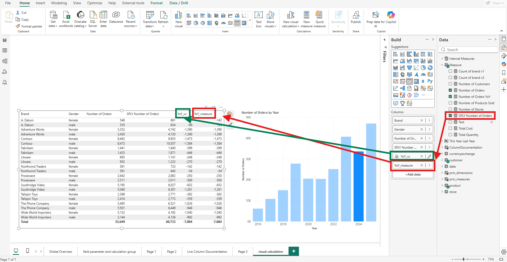
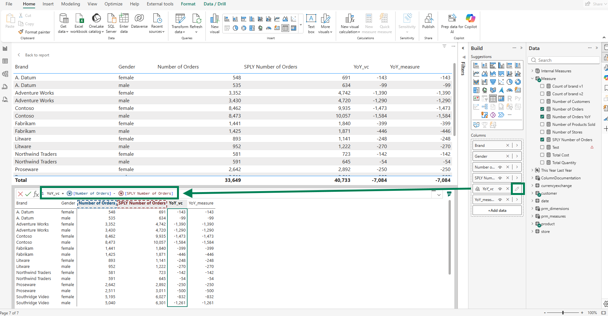
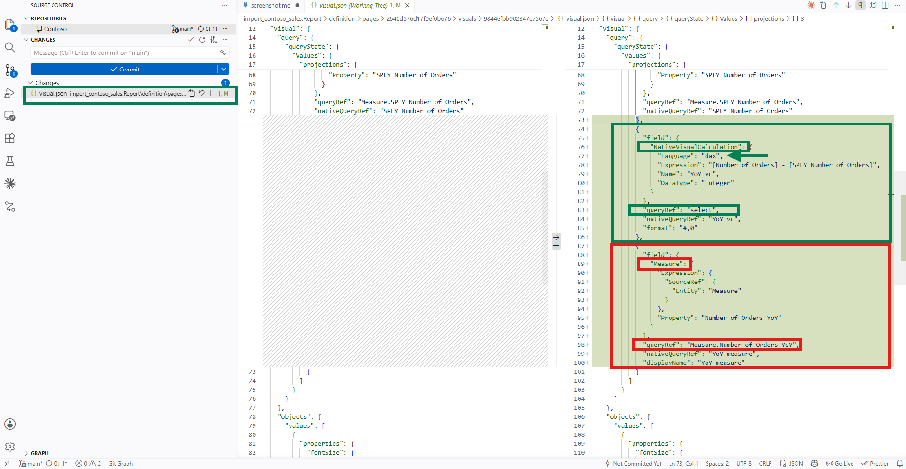
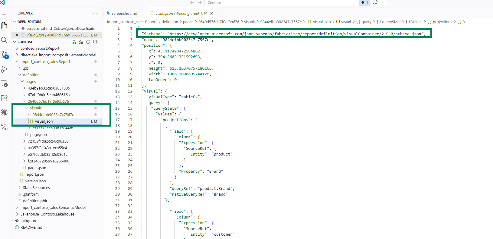
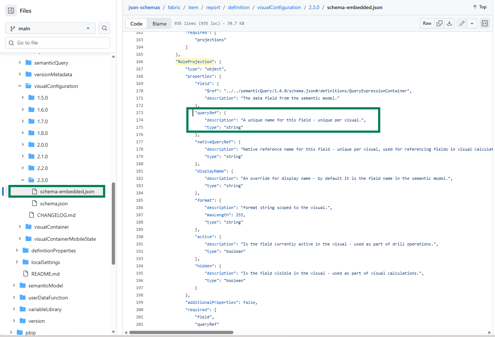
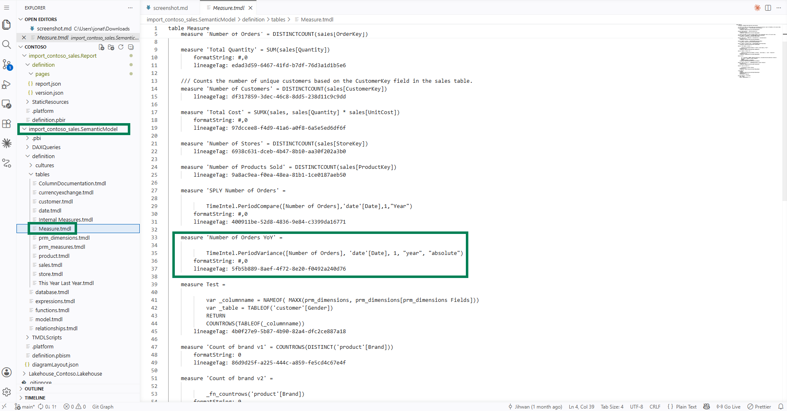

In this writing, I want to share how I added a Visual Calculation called YoY_vc next to a model measure already displayed on the same table visual and read what the visual.json diff actually said about where each one lives, now that Visual Calculations reached General Availability in the May 2026 Power BI release.
The plan was deliberate. The Contoso semantic model I was working with already had a measure called Number of Orders YoY projected onto a table visual under the display alias YoY_measure. I wanted to author a Visual Calculation called YoY_vc that computed the same year-over-year variance directly on the visual, view both columns side by side, then open the source files and read the diff. The whole exercise was a concrete question. When both calculations land on one visual, what does each one look like in the PBIR JSON, and what does that tell me about where they belong?
The diff was short, single-file, and quietly informative.
1. The Setup: YoY_vc and YoY_measure on One Table Visual
The table visual already projected four fields before I touched it. Brand from the product table, Gender from the customer table, and two measures: Number of Orders and SPLY Number of Orders (SPLY stands for Same Period Last Year). A fifth projection bound the model measure Number of Orders YoY into the visual with a per-visual displayName of YoY_measure, so the column header on the visual read YoY_measure while the underlying measure on the semantic model stayed named Number of Orders YoY. The plan was to add one more projection, the new Visual Calculation, alongside this lineup.

The screenshot above shows the table visual after both year-over-year columns are in place. The green callout points at the new YoY_vc column, which is the Visual Calculation. The red callout points at YoY_measure, which is the model measure Number of Orders YoY wearing its per-visual display alias. The two columns sit next to each other and produce the same number for every row, formatted as signed integers with thousands separators (the underlying formatString is #,0 for both, not a percentage).
2. Writing YoY_vc in the Visual Calculations Editor
The Microsoft Learn page on Adding a visual calculation describes what opens when I click the New visual calculation button in the ribbon. The editor takes over the lower half of the screen with a visual preview at the top, a formula bar in the middle, and the visual matrix at the bottom that previews values as I type.

The expression I typed is short and unambiguous:
YoY_vc = [Number of Orders] - [SPLY Number of Orders]One subtraction. Two operands, both already projected on the visual. The Microsoft Learn Adding a visual calculation section notes that most visual calculations are evaluated row-by-row across the visual matrix by default, like a calculated column. In this case that default behavior is what I want: the subtraction resolves at each row of the matrix using the same Number of Orders and SPLY Number of Orders values the visual is already displaying.
3. Reading the visual.json Diff
Saving the report and opening the Source Control panel in VS Code is where the deliberate part of the plan paid off.

One file changed. The PBIR folder and files section of the Power BI Desktop project report folder documentation describes the structure: every visual lives at definition/pages/[pageName]/visuals/[visualName]/visual.json. My change showed up under the page-folder GUID and the table-visual-folder GUID that VS Code surfaces in the screenshot above. The diff was the addition of one new projection block alongside the existing five.
The new projection block, verbatim from the file:
{
"field": {
"NativeVisualCalculation": {
"Language": "dax",
"Expression": "[Number of Orders] - [SPLY Number of Orders]",
"Name": "YoY_vc",
"DataType": "Integer"
}
},
"queryRef": "select",
"nativeQueryRef": "YoY_vc",
"format": "#,0"
}For comparison, the projection block sitting right next to it for the model measure (which was already on the visual before I started, unchanged in this diff):
{
"field": {
"Measure": {
"Expression": {
"SourceRef": {
"Entity": "Measure"
}
},
"Property": "Number of Orders YoY"
}
},
"queryRef": "Measure.Number of Orders YoY",
"nativeQueryRef": "YoY_measure",
"displayName": "YoY_measure"
}Both blocks live inside the same query.queryState.Values.projections array of the same visual.json file. One block carries the full DAX expression as a string. The other block carries a pointer to a model object by name. The contrast is the entire story of the diff.
4. Decoding the NativeVisualCalculation Block
The visual calculation block uses NativeVisualCalculation as its inner field shape, which is the PBIR schema's way of saying "this field is authored on the visual itself, not bound to a model object." The visual.json file declares its schema at the top of the document.

definition > pages > 2640d576d17f0ef0b676 > visuals > 9844efbb902347c7567c > visual.json open, with the $schema URL on line 2 highlighted in a green box" loading="lazy">The screenshot above shows line 2 of the file with the $schema URL highlighted. That URL points to a JSON Schema document that Microsoft publishes. The Microsoft Learn PBIR JSON Schemas section explains that the schema URL at the top of each PBIR file is publicly accessible and lets a code editor like VS Code validate the property names and values while editing. In plain terms, every property the file uses is defined by Microsoft in a document the editor can reach, which is what makes the file self-describing. The schemas themselves live in the public microsoft/json-schemas repository on GitHub.
Five properties inside the NativeVisualCalculation and its surrounding projection are worth naming, because they answered the practical questions I had walking into the diff:
Languageset to"dax"declares the expression language formally. The schema property exists so the file does not have to rely on convention or file extension to describe what the expression string contains. The conceptual anchor for this property is the Microsoft Learn Visual Calculations Overview, which opens with "A visual calculation is a DAX calculation defined and executed directly on a visual." DAX is the language of visual calculations, andLanguageis where the file records that.Expressionis the literal DAX as a string. My expression is[Number of Orders] - [SPLY Number of Orders], which references two measures already on the visual. The same MS Learn overview reminds me in its opening list comparing visual calculations to other DAX surfaces that "visual calculations can only refer to what's on the visual." Both operands here qualify.NameisYoY_vc, the identifier the visual uses to refer to this calculation in subsequent positions, sorts, or formatting. It's also the column header that ends up on the table visual.DataTypeisInteger. This drives the data-type handling for the resulting column.queryRefat the outer projection level is"select"(lowercase) for this visual calculation. The property is defined in the published visualConfiguration/2.3.0/schema-embedded.json file under theRoleProjectiondefinition, where its description reads "A unique name for this field - unique per visual." Worth noting that the schema describes the constraint (a unique name per visual) but does not enumerate accepted values or document a specific convention for visual calculations. What I can report from my ownvisual.jsonis that the model-measure projection right next door uses"Measure.Number of Orders YoY", while the visual calculation projection uses"select". I have not found a Microsoft Learn or schema citation that explains the"select"string itself, so I would describe this as an observation in my file rather than a documented convention.

The screenshot above shows the RoleProjection schema definition with queryRef highlighted. The schema documents the property as a unique-per-visual string and stops there. The visible neighbors nativeQueryRef, displayName, format, active, and hidden have their own descriptions in the same block, but none of them enumerates accepted values for queryRef either.
Two more properties round out the visual calculation projection. nativeQueryRef repeats the calculation name as the engine reference, and format carries the format string #,0. The format string is in plain sight in the file, and that is why both YoY_vc and YoY_measure render as signed integers on the table even though their column names sound like they could be percentages.
5. Visual-Scoped Storage Is the Design, in Preview and at GA
The first time a colleague reads this diff over my shoulder, the question I expect is whether it's a good idea that the business logic for YoY_vc lives only inside one visual's JSON. The MS Learn overview answers this directly. In the opening list comparing visual calculations to other DAX surfaces, the documentation states: "Visual calculations aren't stored in the model, and instead are stored on the visual. This means visual calculations can only refer to what's on the visual." The two sentences are two halves of one design choice. If the calculation can only see the visual, then storing it outside the visual would couple it to nothing useful.
Reading further into the same overview, the Unsupported features list includes "Copy/paste or reuse across visuals" as a documented limitation. Read in context, it is a statement about scope. Visual-grain patterns such as running totals, percent of parent, percent of grand total, and year-over-year on a specific date axis are visual-grain by their nature. The eleven built-in templates all sit comfortably inside that scope.
Worth being precise about what the May 2026 General Availability milestone did change and what it did not. The storage location was already on the visual throughout the Preview period. The architectural sentence quoted above is not a May 2026 addition to the documentation. What General Availability changed is production stability and tier availability. The preview flag is no longer required, and the feature is available across Pro, Premium Per User, Premium Per Capacity, and Fabric F-SKU tiers. That is the legitimate "what is new" story to tell about GA. It is not a change to the JSON shape.
6. How the Two Calculations Are Written in the Sample
Worth looking at the two expressions side by side, because they reach the same number through very different shapes of DAX.
The Visual Calculation, written inside the visual:
YoY_vc = [Number of Orders] - [SPLY Number of Orders]The model measure, written in TMDL inside the semantic model:

definition > tables > Measure.tmdl with the Number of Orders YoY measure highlighted, whose body calls TimeIntel.PeriodVariance" loading="lazy">The screenshot above shows the Number of Orders YoY measure inside Measure.tmdl. Its body is a single call to TimeIntel.PeriodVariance, which is a DAX User-Defined Function (UDF). I walked through how this UDF library is built in Building a Portable Time Intelligence Library with DAX User-Defined Functions earlier this year. The function takes a measure, a date column, an interval, a grain, and a variance flavor, and returns the period-over-period variance. In this case, year-over-year, absolute.
The Visual Calculation under the name YoY_vc reaches the same year-over-year number with a single subtraction over two measures already on the visual. Both produce the same value with the same #,0 format. They get there differently because they live at different layers and answer at different scopes.
7. From a DevOps Standpoint, What the GA Milestone Gives the Diff
From a DevOps standpoint, the same diff surface that Visual Calculations have been producing in visual.json throughout the Preview period is now production-stable across all Power BI licensing tiers. The shape of the diff has not changed at GA. What GA gives a team is the freedom to treat that diff shape as a stable target wherever Power BI is licensed.
Version Control: One Schema-Validated JSON Block Per Calculation
Each Visual Calculation is a single NativeVisualCalculation block inside one visual.json file, declared against a public JSON schema (visualContainer/2.9.0 at the time of this writing). A reviewer can read the DAX as plain text, see the field-binding context around it, and pick up the format string from the same projection. The PBIR format section on Microsoft Learn calls out batch-edit-across-visuals as one of the explicit format benefits. A Visual Calculation rename or formula tweak is exactly that kind of edit at GA scale.
Code Review: Local-by-Construction Scope
A Visual Calculation edit touches one visual.json. A reviewer can scope the conversation to one chart on one page. Compared to a model measure change, which can propagate to every report that connects, the visual calculation change is local by construction. The folder path itself names the page and the visual the edit affects.
Clean Separation of Concerns: Model Owners and Report Authors
The audience separation surfaced earlier in the post lands cleanly in the review process. Semantic model owners curate the measure layer in TMDL, where DAX User-Defined Functions like TimeIntel.PeriodVariance and other shared building blocks live. Report authors iterate on visual-grain patterns inside visual.json. Both populations leave a Git history that reflects the kind of change they were making, with no mixing of layers in the same diff.
Documentation: The PBIP Documenter Hook
One follow-up for my own tooling. PBIP Documenter surfaces TMDL-driven artifacts such as tables, measures, calculated columns, and relationships. With Visual Calculations now production-stable, treating NativeVisualCalculation blocks as a first-class artifact class in generated documentation is a sensible next step. The schema is public, the property names are stable, and the discovery is the same as for any other PBIR JSON entity.
Closing Thoughts
This experience left me with a new mental model. Visual Calculations and DAX measures answer different layer-ownership questions, and the May 2026 General Availability of Visual Calculations means the visual-layer answer is now production-stable to depend on across all licensing tiers.
The visual-layer storage in visual.json was true throughout the Preview period and continues to be true at GA. The same diff shape has been there all along. What I am thinking about now is what it means for a piece of business logic to live inside one visual rather than inside the model. The single-subtraction YoY_vc on this one table is a comfortable case, because the answer is the same as the model measure sitting next to it and the audience for the visual is the only audience that needs that calculation. The boundary is less obvious when the logic gets longer, when the visual-grain pattern is genuinely different from any existing model measure, or when more than one visual on the same page wants the same shape and is not allowed to share.
This is one snapshot from one experiment in one sample. I still want to try Visual Calculations on a few more patterns before I am confident I know where the per-chart scope is a benefit and where it becomes a constraint. The plan is to keep adding small Visual Calculations next to model measures and to keep reading the visual.json diff after each one.
I hope this inspires you to add a Visual Calculation next to one of your model measures and read what your own visual.json diff says about where each one lives.